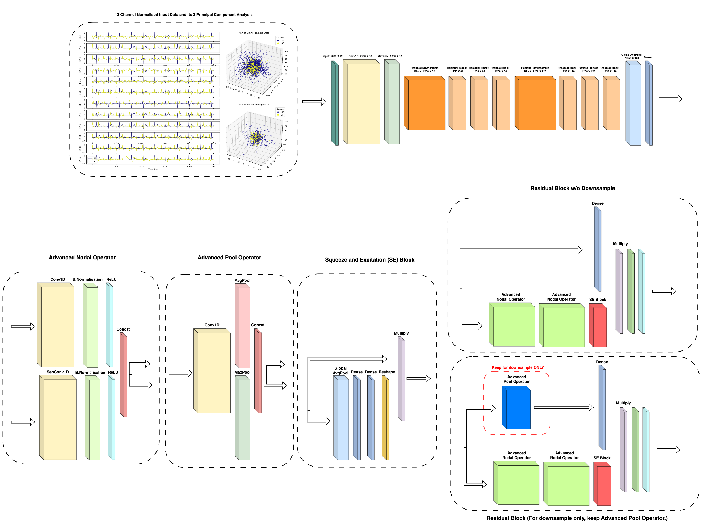
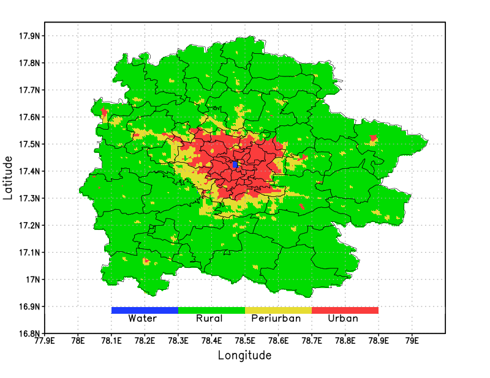
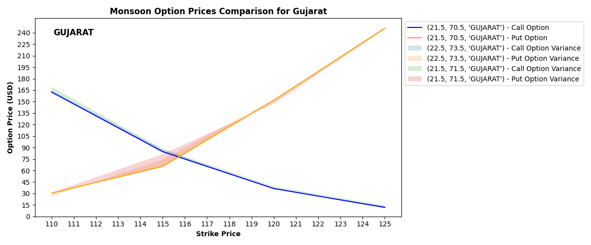

|
Soumil Hooda Silicon Engineer at Google I graduated in 2025 from BITS Pilani, Hyderabad, with a dual degree: a Bachelor of Engineering in Electrical and Electronics, and a Master of Science in Physics. Over the years, I’ve had the chance to work across diverse research settings. At the Space Applications Centre (ISRO) and CSIR-CEERI, I explored applied machine learning in remote sensing, atmospheric modelling, healthcare, and Brain-Computer Interfaces. Along the way, I was fortunate to collaborate with inspiring mentors including Prof. Manik Gupta, Prof. Rajesh Tripathy, and Dr. Satya Prakash Ojha. Another major focus of mine has been weather risk management in India—an area I believe is still underserved. I developed a suite of financial products such as temperature-based derivatives, rainfall-agriculture quanto contracts, and wind/solar energy swaps, while also studying securitization strategies for schemes like PMFBY and WBCIS. Please click here if you’d like to read a more personal account of this. On the industry side, I interned at Texas Instruments, where I worked on an assertion-based verification IP for an internal protocol, and prototyped a GNN + RL–based framework for formal verification of complex FSMs. I later interned at Google, where I contributed to the Tensor chassis platform in subsystem fabric / auxiliary network integration, and now work full-time as a Silicon Engineer with the coherent fabric design team. Email / Google Scholar / LinkedIn / Github / X |
{kind=link}
News
|
Thoughts |
H1 2025 Reads
|
Research |
|

|
SERN-AwGOP: Squeeze-and-Excitation Residual Network With an Attention-Weighted Generalized Operational Perceptron for Atrial Fibrillation Detection
Soumil Hooda*, Rajesh Kumar Tripathy IEEE Access, 2025 SERN-AwGOP detects atrial fibrillation from ECG with high accuracy, robustness to noise, and strong cross-dataset generalization. |
|

|
Supervised Model for Peri-Urban Area Demarcation in Hyderabad, India
Ravi Bhushan, Soumil Hooda*, Hiten Vidhani, Manik Gupta, Lavyana Suresh, Timothy Clune IEEE Geoscience and Remote Sensing Letters, 2024 RBF-SVM model maps peri-urban expansion near Hyderabad, revealing 108% growth. |

|
Retrieval of Atmospheric Water Vapor Profiles From COSMIC-2 Radio Occultation Constellation Using Machine Learning
Soumil Hooda*, Manik Gupta, Randhir Singh, Satya P. Ojha IEEE Transactions on Geoscience and Remote Sensing, 2023 ANN model retrieves atmospheric water vapor from COSMIC-2 data, outperforming existing methods. |
Research Attempts |
|

|
Quantifying Seasonal Weather Risk in Indian Markets: Stochastic Model for Risk-Averse State-Specific Temperature Derivative Pricing
Soumil Hooda*, Shubham Sharma, Kunal Bansal arXiv Risk Management (q-fin.RM), 2024 Stochastic model prices Indian weather derivatives (HDD, CDD, extreme events) for state-specific hedging. Caution: The specific risk-neutral measure implementation requires validation. |
|
Last updated on September 28th 2025. Website template taken with gratitude from Jay Karhade. |